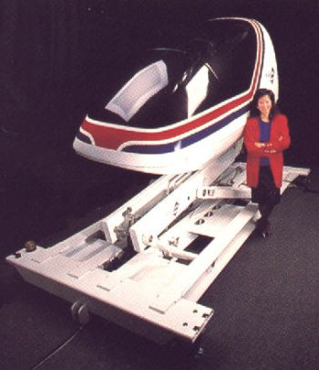
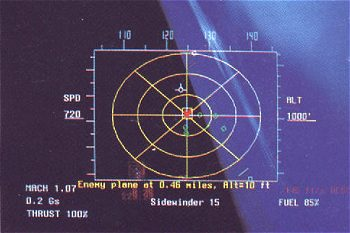

The
Beginning It was my first
experience with a Silicon Valley start up company. We were about 30 employees
strong when I joined the team. We all had high hopes of building a global
franchise of virtual reality entertainment centers.
The first center was built in Mountain View,
Califonia, the second in Tokyo, Japan, and the third was ordered for Sydney,
Austalia
I was hired with 50,000 shares
of stock in a company that was destined to go public within three years.
This was to be my big break or so I thought.
1245
Space Park Way
Mountain View, California
94043 (415)
965-8819
The
Product Sleek as a teardrop and designed with strength and
quality, HORNET-1 delivers thrill after thrill of supersonic entertainment.
Settle back into HORNET-1's cockpit and crank down your flight harness.
Verify your instruments, adjust your headset check your throttle...but
don't get too comfortable: once the canopy closes, you'll find yourself
face to face with deadly bogeys who'd be just as happy to blow you away.
You're lined up just right with your first
ground target a command and control facility. Select your weapon, a Sidewinder
missile. Your heads-up display indicates you're locking on target.
Suddenly your view is obstructed by smoke
from antiaircraft fire exploding in your path! In your headset the voice
of your Squadron Commander is tense as he instructs you to take immediate
evasive action.
 YOU
NOSE DOWN and break right jolted against your seat by G-forces. There's
no time to escape as enemy flak pierces your fuel tank! Losing altitude,
you search frantically for a place to land. There's a runway to the west
but you may not make it. You begin to glide, concentrating hard to keep
your wings level. The terrain below, pastoral farmland from 20,000 feet
now rushes up as a rugged threat.
End
Game
We had a major Christmas Party in 1995. Lots of toasts to our success
and dreams of the future. Several months later in 1996 management announced
the cash flow problems and asked that everyone go on half pay for a short
time. Three months later there was no cash for salaries, but the investors
were right around the corner they said. I took the summer off and returned
home to the shores of Lake Superior. Upon returning Chapter 7 Bankrupcy
was filed. My $13,000 in unpaid back salary was placed on a low priority
creditors list. I never did receive a dime.
See San Jose Federal Bankrupcy Court Filing.
See Lawyer Letter.
It was fun while it lasted and found these additional links.